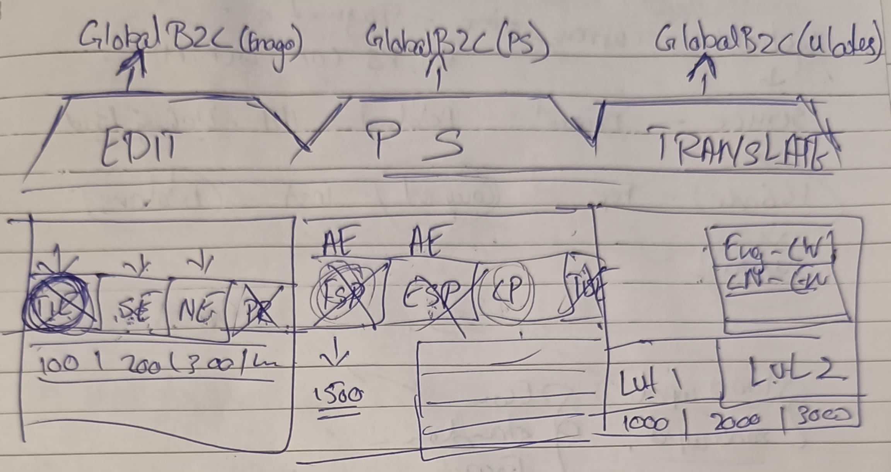

Strategic Selling · Case Study
Cross-selling Publication Support via Enago
The context
Crimson Interactive runs multiple brands across the publishing ecosystem. Two were particularly relevant here:
- Enago — academic editing and language services for researchers
- Publication Support (PS) — journal selection, plagiarism checks, formatting, and end-to-end publication assistance
Historically these brands operated in silos with separate websites and user journeys.
Problem / opportunity
Looking at user behaviour, a pattern jumped out: authors who finished with Enago editing were later searching for exactly the services PS offered — but discovering them through Google, not through us. We were handing off warm intent to the open web at the worst possible moment.
That became the cross-sell opportunity:
- Editing and proofreading services
- Translation and localisation services
- Publication Support
The commercials
- Collaborated with marketing and business teams to identify which PS services paired most naturally with each Enago order type
- Worked out pricing structures that made the add-on feel like value, not upsell pressure
- Repackaged PS offerings into a cleaner add-on set so the Enago order page could present them without friction
Here's how we did it
- Mapped the new user flow end-to-end: Enago order → PS add-on selection → unified checkout
- Partnered with UI/UX on an add-on selection module that sat inside the existing order page with minimal visual noise
- Aligned marketing copy so the upsell read as helpful next-step guidance rather than a pitch
- Coordinated with engineering on inventory, pricing, and brand-handover edge cases behind the scenes

Outcome
Cross-sell uptake hit +12% within the first post-launch cycle. More importantly, the PS brand stopped leaking Enago-originated demand to the open web — and authors got a cleaner, single-journey experience that felt less like two vendors and more like one publishing partner.